PART I
Lakku’s new feature
Lakku.ai is an AI marketing platform for Indonesian small businesses. It started by generating ad images from sellers’ product photos. Later users asked for a way to create videos too.
The stakeholders put together the first video generation flow quickly so the team could launch and test the idea.
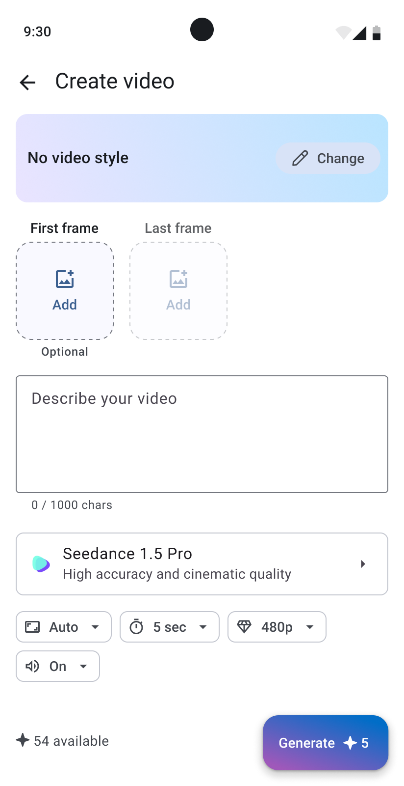
The screen had a prompt field and familiar settings such as duration, resolution, and sound. It also offered a choice of video models with different capabilities and credit costs.
Video styles were another new part of the flow: preset camera movements and visual effects that could help users turn their ideas into video ads. Tapping a style played a preview with a sample person or object.
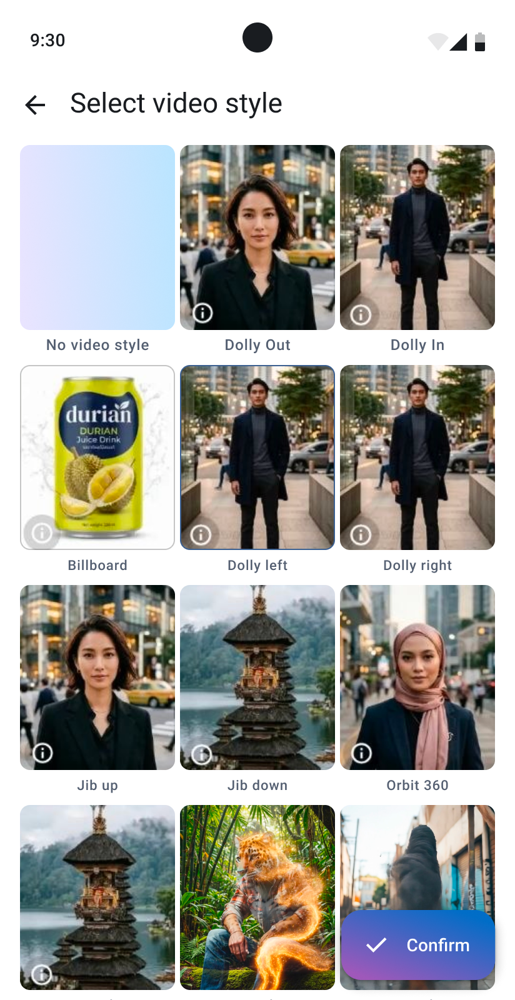
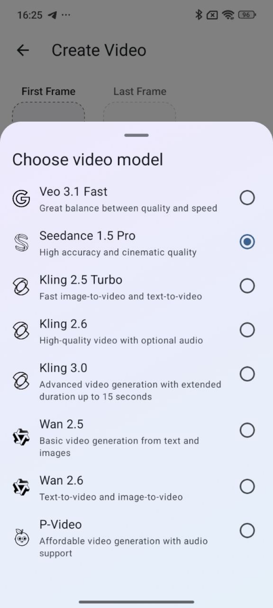
The problem
The early data showed a clear pattern: people rarely used video styles and almost always kept the default model:
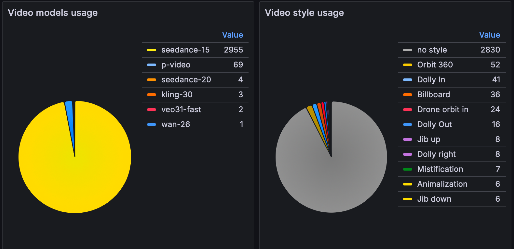
This could lead to the following problems:
- users skipped video styles that might have inspired their video ideas when they were unsure what to create. I believe this could decrease video conversion rate in some cases;
- some styles use different video models, most costing more credits than the default Seedance 1.5, so users ended up spending fewer credits than they could have;
- after changing a style, the form silently switched the model too. Non-default models often cost more, so users might be unpleasantly surprised by a higher generation fee. Without knowing why the price increased, they might just give up generating.
Making styles easier to discover
I researched two ways of making styles more visible.
The first one added quick access to style selection directly into the familiar video creation workflow. I changed the copy from “No video style” to “Choose style >” to make it more actionable and placed 3 styles upfront to show the potential value. Their previews played automatically to capture users’ attention.
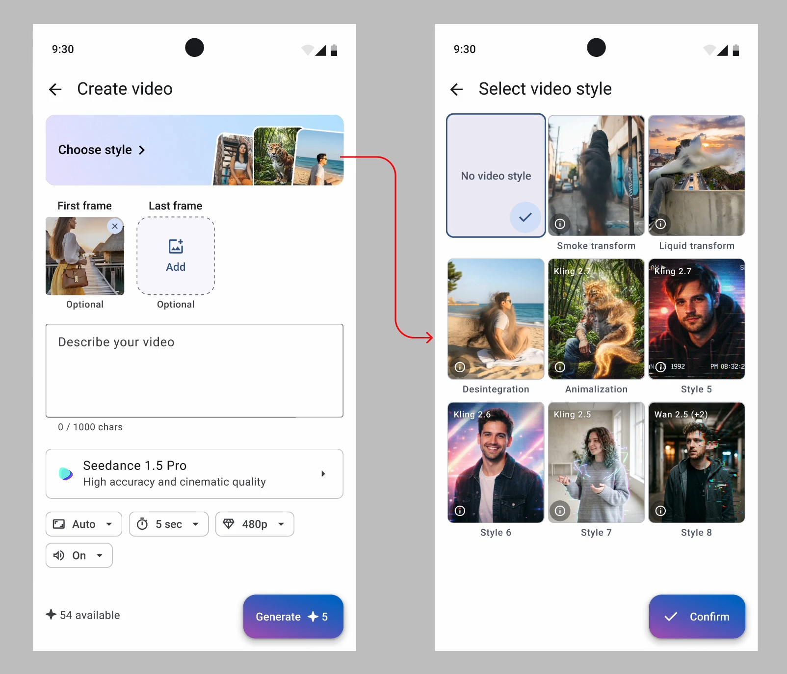
The second approach was built around a carousel: the user could browse more options and select the effect directly from the visual previews.
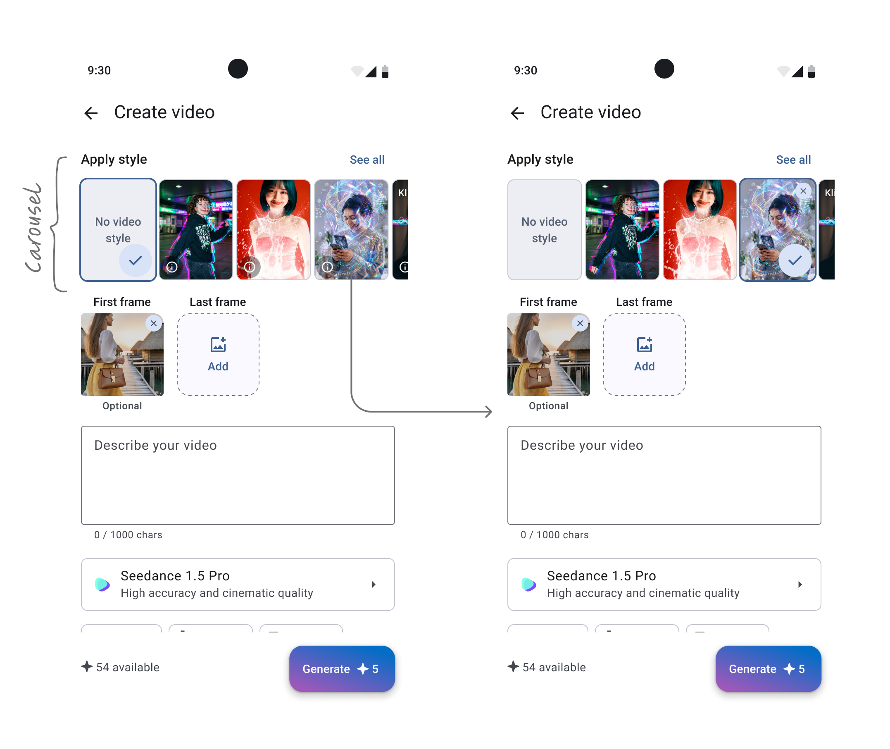
The carousel reduced the number of steps needed to select a style, showcasing them all upfront. But made the choice complicated — after scrolling, the chosen style would move out of view, so it was necessary to design a persistent display of the selection, a way to return to it, and a connection to the model and generation cost. Otherwise, the user could lose track of which style was currently active and what exactly would change as a result.
The team selected the first approach. It made the styles prominent, and kept the video creation familiar and clear.
To make the style–model link clearer, I suggested showing which non-default model a style uses. If the style cost more, the flow would warn users. If several models were available, it would ask them to choose one:
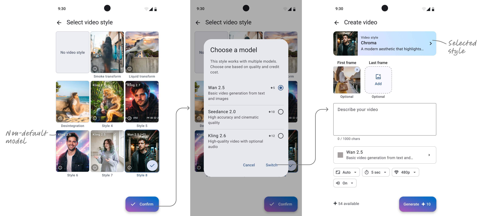
First results
After a month we checked the analytics:
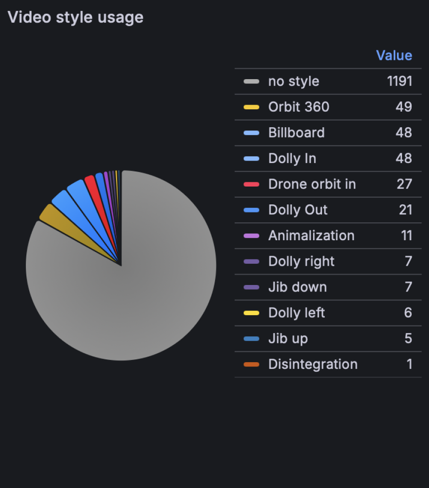
In this period 230 of 1,421 video generations used a style (16.19%). In April it was 204 of 3,034 (6.72%).
At the same time the usage of video models besides Seedance 1.5 decreased from 2.60% to 1.76%. This was not the main goal of the update, but I decided to look even deeper.
PART II
Digging for more
I asked myself: Why don’t people change the model for their videos?
Then I realized that the right question was: Why should they change it at all?
Every video model affects three main aspects: generation quality & accuracy, cost, and length. But do our users truly understand that they can adjust these factors and that they depend on the selected model? Does our UI explain this connection?


To find out, I ran two small first-click tests. One asked where people would go to improve video quality, the other asked how they would spend fewer credits. I followed each task with questions about what they thought the model selector did.
You want the video to look better and higher quality. Where would you tap first?
- Why did you click here?
- What do you think the "Choose model" section is for?
- What do you think will change if you select a different model?
- In what situation would you change the model?
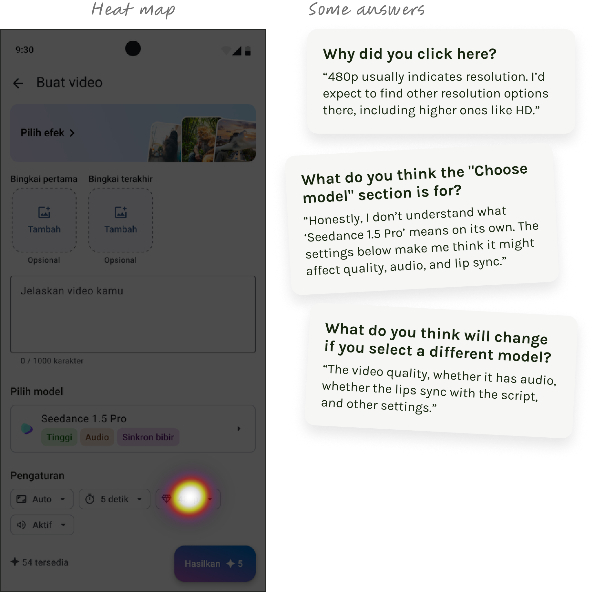
In the first-click test, all 6 participants chose 480p resolution to improve video quality. No one started by selecting a model. In subsequent responses, some participants correctly identified the block's purpose, but expectations from changing the model varied — from quality and smoothness to sound, lip-sync, and visual style.
This revealed an issue not only with the visibility of the model selection but also with the clarity of its value.
Next test group:
You want to spend fewer credits. Where will you click?
- Why did you click here?
- What do you think the "Choose model" section is for?
- What do you think will change if you select a different model?
- In what situation would you change the model?
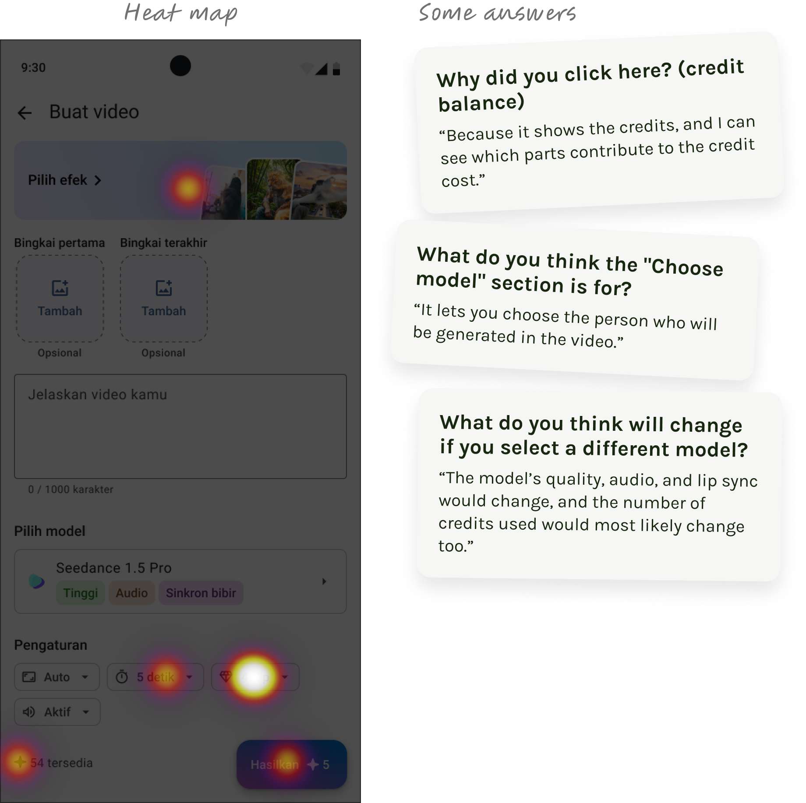
I checked whether users understand how to reduce the cost of video generation — 6 participants searched for a solution in different parts of the screen: among effects, resolution, duration, and credit information. In responses about model selection, there was a similar spread: some associated it with capabilities and generation cost, while one participant understood "model" as the person who would appear in the video.
Making video models easier to choose
So the term “Video model” appeared to be technical and confusing for Indonesian users. They don’t understand how a model relates to quality or price.
I proposed calling the setting “Video quality” to give people a more familiar starting point. Instead of showing technical model names, I presented the options as Recommended, Balanced, High, Premium, Advanced, and Draft. I also added the credit cost and short feature tags to help them understand the differences before choosing.
I kept the model names for power users, but made them secondary.
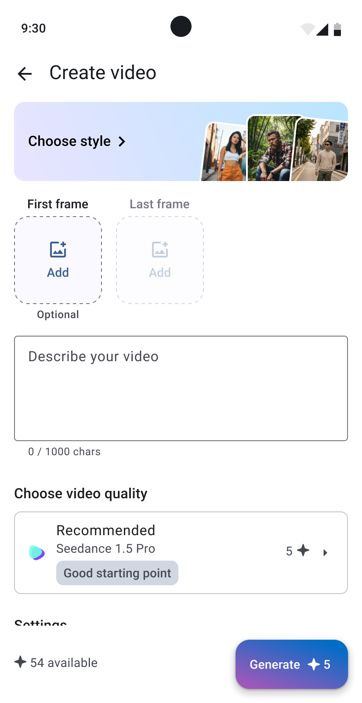
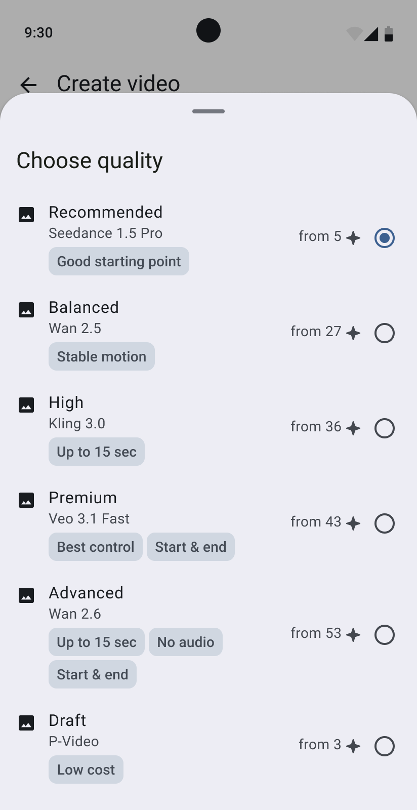
Adding relevant video styles
Another way to increase the usage of non-default models was to add attractive video styles associated with more expensive models.
I noticed that despite having fancy morph style FX, our users in 99.1% generations with a style chose simple camera effects. My first though was that our business audience was looking a style that could make their product look better in a video ad. They didn’t want fun effects, they wanted something relevant for a product ad.
I decided to research the Indonesian video advertisement market to identify popular and common effects. After watching over 40 videos, I identified patterns and grouped them:
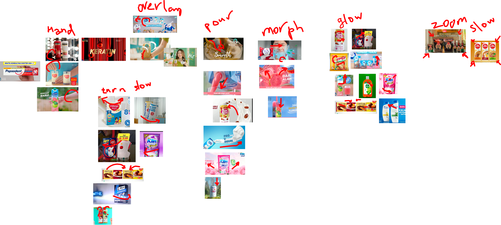
Seven patterns repeated all the time: hands interacting with a product, effect overlays, slow rotation, pouring, morphing, glow, and slow zoom. Building all seven would take too long, so we started with two:
- product promo — combines light zoom and shimmering effect;
- product zoom — repeats the slow zoom pattern.
I highlighted the new styles by placing their samples on the "Choose Style" banner. Additionally, I grouped all styles to help users quickly understand their differences and purposes.
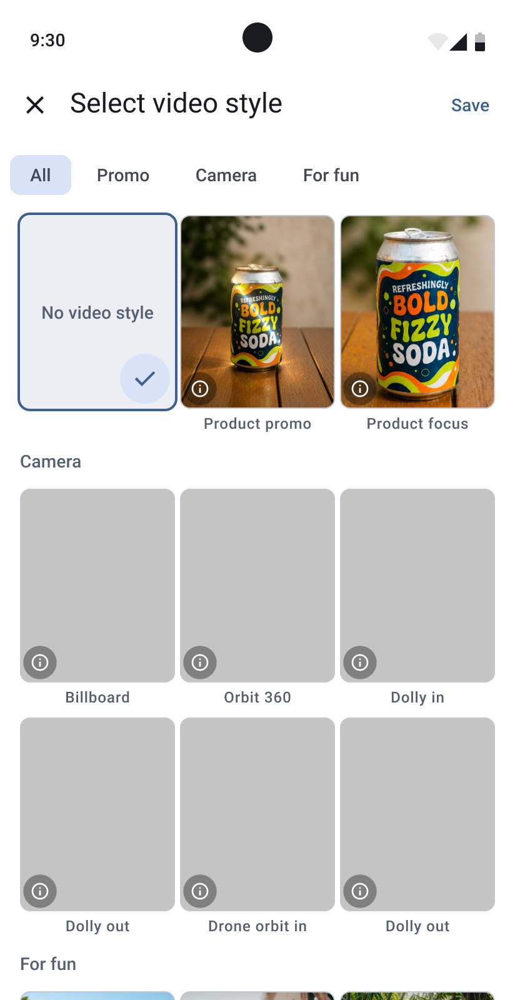
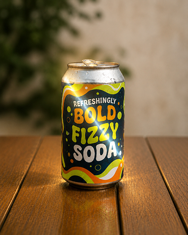
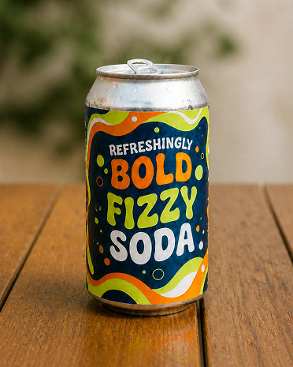
Outcome
We implemented the clearer model selector and the new product-focused styles. Unfortunately, Lakku paused further R&D, so we couldn’t collect enough data to evaluate whether these changes increased the use of non-default models or credit spending.
The first part of this work had a measurable result: the share of video generations with a style rose from 6.72% to 16.19%. For the second part, the outcome is the research and the implemented design, not a measured change in behaviour.
This project reminded me that making an option visible is only part of the job. People also need to understand what they gain by choosing it — and what it will cost.